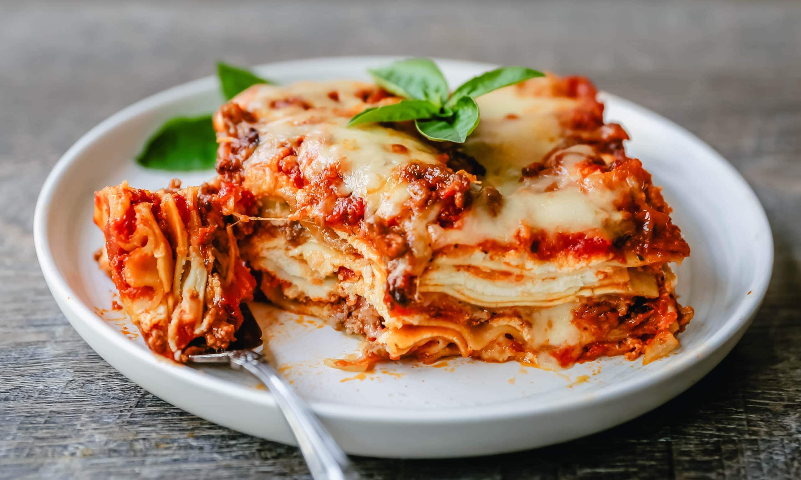

Lasagna

Ingredients:
- 10 lasagna sheets
- 500g mince beef
- 1 can chopped tomatoes
- 150g tomato paste
- 1 cube beef stock
- 1 onion
- 1 carrot
- 1 garlic clove
- 1 celery
- 1L milk
- 200g butter
- 80g flour
- Salt
- Pepper
- Chilli flakes
- Parmigiano Reggiano
- Olive oil
Steps:
Sauce:
- Dice the onion, carrot and celery and add to a medium heat pot with olive oil
- Once onions have begun to yellow, add the mince beef in chunks, working with a wooden spood to avoid clumping
- Once all of the beef is added and has browned, add the minced garlic clove
- After 30 seconds, add the can of chopped tomatoes and the tomato paste
- Add the beef stock cube after melting in a mug of boiling water
- Season to taste, and allow to cook for 1.5 hours
Bechamel:
- Add the butter to a pot and stir until melted
- Once melted, slowly add the flour while constantly stirring to avoid clumping
- Mixture should have a bicuit like texture, once this is reached, stir in the hot milk
- once the mixture thickens, add half of the grated Parmigiano
Building the Lasagna
- In a oven tray, layer the lasagna adding first the sauce, then bechamel and then a layer of pasta
- Continue layering until no sauce remains
- Grate the remaining Parmigiano over the lasagna
- Place the tray in the oven at 180C for 1 hour